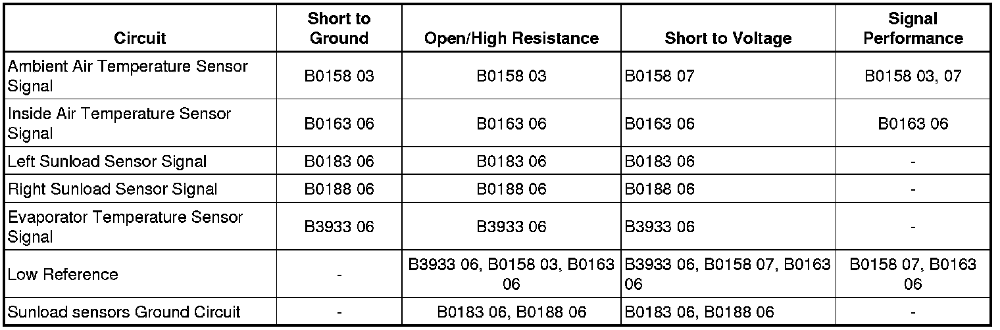

Air Temperature Malfunction
Air Temperature Malfunction
Diagnostic Instructions
* Perform the Diagnostic System Check - Vehicle (Initial Inspection and Diagnostic Overview) prior to using this diagnostic procedure.
* Review Strategy Based Diagnosis (Initial Inspection and Diagnostic Overview) for an overview of the diagnostic approach.
* Diagnostic Procedure Instructions (Initial Inspection and Diagnostic Overview)provides an overview of each diagnostic category.
Diagnostic Fault Information

Circuit Description
Evaporator, Inside and Ambient Air Temperature Sensors
The HVAC control module supplies the evaporator, inside and ambient air temperature sensors with a low reference circuit and 5-volt signal circuit. The inside air temperature sensor has a fan motor that operates using body ground and a 12 volt supply from the HVAC control module when the ignition and HVAC control module are ON. The HVAC control module determines the voltage drop across the sensors, which is proportional to temperature. As the air temperature increases, the sensor resistance decreases and the voltage signal decreases. As the air temperature decreases, the sensor resistance increases and the voltage signal increases.
Sunload Sensor Assembly
The sunload sensor is a 2-wire photo diode. Body ground and 5-volt signal circuits enable the sensor to operate. As the sunload increases, the sensor signal decreases. The sensor operates within an intensity range between completely dark and very bright. The sunload sensor provides the HVAC control module with a measurement of the amount of light shining on the vehicle. Bright or high intensity light causes the vehicles interior temperature to increase. The HVAC system compensates for the increased temperature by diverting additional cool air into the vehicle.
Reference Information
Schematic Reference
HVAC Schematics (Electrical Diagrams)
Connector End View Reference
Component Connector End Views (Connector Views)
Description and Operation
Automatic HVAC Description and Operation (Automatic HVAC Description and Operation (Part 1))
Electrical Information Reference
* Circuit Testing (Component Tests and General Diagnostics)
* Connector Repairs (Component Tests and General Diagnostics)
* Testing for Intermittent Conditions and Poor Connections (Component Tests and General Diagnostics)
* Wiring Repairs (Component Tests and General Diagnostics)
Scan Tool Reference
Control Module References (Programming and Relearning)
Circuit/System Verification
1. Ignition ON, cover the sunload sensor assembly with a shop towel or other suitable item. Verify the scan tool Right Sunload Sensor and Left Sunload Sensor parameters are within 3 counts of each other.
• If not within the specified range, refer to Sunload Sensor Circuit Malfunction.
2. Remove the shop towel and shine a flashlight on the sunload sensor assembly. Verify the scan tool Right Sunload Sensor and Left Sunload Sensor parameters are within 3 counts of each other.
• If not within the specified range, refer to Sunload Sensor Circuit Malfunction.
3. Measure actual outside air temperature using a thermometer. Compare this value to the scan tool Outside Air Temp. Raw parameter. The measured temperature should be within 5 degrees of parameter.
• If not within the specified range, refer to Evaporator and Ambient Air Temperature Sensor Circuit Malfunction.
4. Measure actual inside air temperature using a thermometer. Compare this value to the scan tool Inside Air Temp. parameter. The measured temperature should be within 5 degrees of parameter.
• If not within the specified range, refer to Inside Air Temperature Sensor Circuit Malfunction.
5. Measure actual evaporator air temperature using a thermometer. Compare this value to the scan tool A/C Evap. Temperature Sensor parameter. The measured temperature should be within 5 degrees of the parameter.
• If not within the specified range, refer to Evaporator and Ambient Air Temperature Sensor Circuit Malfunction.
Circuit/System Testing
Important: If any of the air temperature sensors or sunload sensors have an out of range condition caused by a short to voltage, short to ground, or an open/high resistance a diagnostic trouble code (DTC) will set. The following tests describe conditions that can cause inaccurate information to be processed in the HVAC control module and also operate between the minimum and maximum operating range without setting a DTC.
Evaporator and Ambient Air Temperature Sensor Circuit Malfunction
1. Ignition OFF, disconnect the harness connector at the appropriate temperature sensor.
2. Ignition OFF, test for less than 10 ohms of resistance between the appropriate low reference circuit terminal and ground.
* Ambient air temperature sensor terminal B.
* Evaporator temperature sensor terminal 2.
• If greater than the specified range, test the low reference circuit for high resistance. If the circuit tests normal, replace the HVAC control module.
3. Ignition ON, test for 4.8-5.2 volts between the low reference circuit terminal B and the appropriate signal circuit terminal.
* Ambient air temperature sensor terminal A.
* Evaporator temperature sensor terminal 1.
• If less than the specified range, test the signal circuit for high resistance. If the circuit tests normal, replace the HVAC control module.
4. If all circuits test normal, test or replace the appropriate temperature sensor.
Sunload Sensor Circuit Malfunction
1. Ignition OFF, disconnect the harness connector at the sunload sensor.
2. Ignition OFF, test for less than 10 ohms of resistance between the low reference circuit terminal C and ground.
• If greater than the specified range, test the ground circuit for high resistance.
3. Ignition ON, test for 4.8-5.2 volts between the low reference circuit terminal C and the appropriate signal circuit terminal.
* Left sunload sensor circuit terminal A.
* Right sunload sensor circuit terminal B.
• If less than the specified range, test the signal circuit for high resistance. If the circuit tests normal, replace the HVAC control module.
4. If all circuits test normal, test or replace the sunload sensor.
Inside Air Temperature Sensor Circuit Malfunction
1. Ignition OFF, disconnect the harness connector at the inside air temperature sensor.
2. Ignition OFF, test for less than 10 ohms of resistance between the low reference circuit terminal 2 and ground.
• If greater than the specified range, test the low reference circuit for high resistance. If the circuit tests normal, replace the HVAC control module.
3. Ignition ON, test for 4.8-5.2 volts between the low reference circuit terminal 2 and the signal circuit terminal 1.
• If less than the specified range, test the signal circuit for high resistance. If the circuit tests normal, replace the HVAC control module.
4. If all circuits test normal, test or replace the inside air temperature sensor.
Component Testing
1. Test the appropriate air temperature sensor by varying the sensor temperature in water while monitoring the sensor resistance.
2. Compare the readings with the Temperature vs Resistance table and verify that the resistance is within 5 percent of the specification.
• If not within the specified range, replace the sensor.
Repair Instructions
Perform the Diagnostic Repair Verification (Verification Tests) after completing the diagnostic procedure.
* Ambient Air Temperature Sensor Replacement (Service and Repair)
* Inside Air Temperature Sensor Replacement (Left Hand Drive) (Inside Air Temperature Sensor Replacement (Left Hand Drive))Inside Air Temperature Sensor Replacement (Right Hand Drive) (Inside Air Temperature Sensor Replacement (Right Hand Drive))
* Sun Load Sensor Replacement (Service and Repair)
* Evaporator Temperature Sensor Replacement (Service and Repair)
* Control Module References (Programming and Relearning)for HVAC control module replacement, setup, and programming